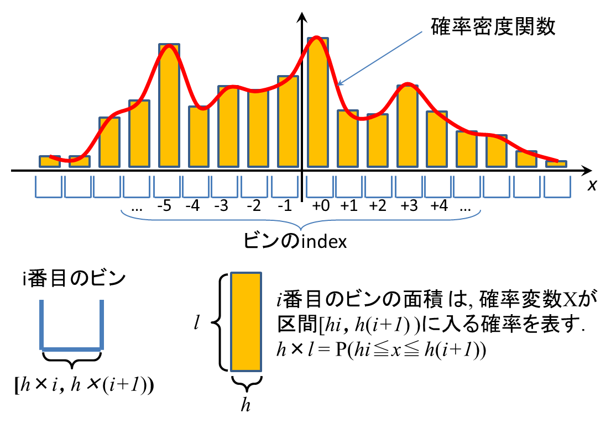
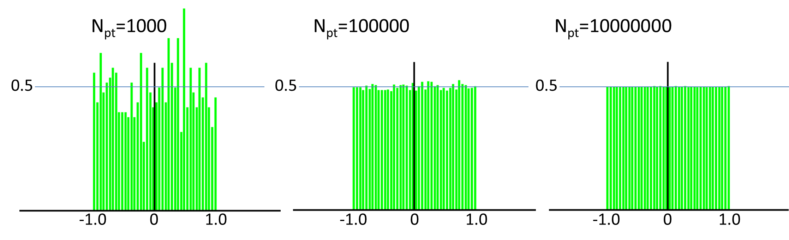
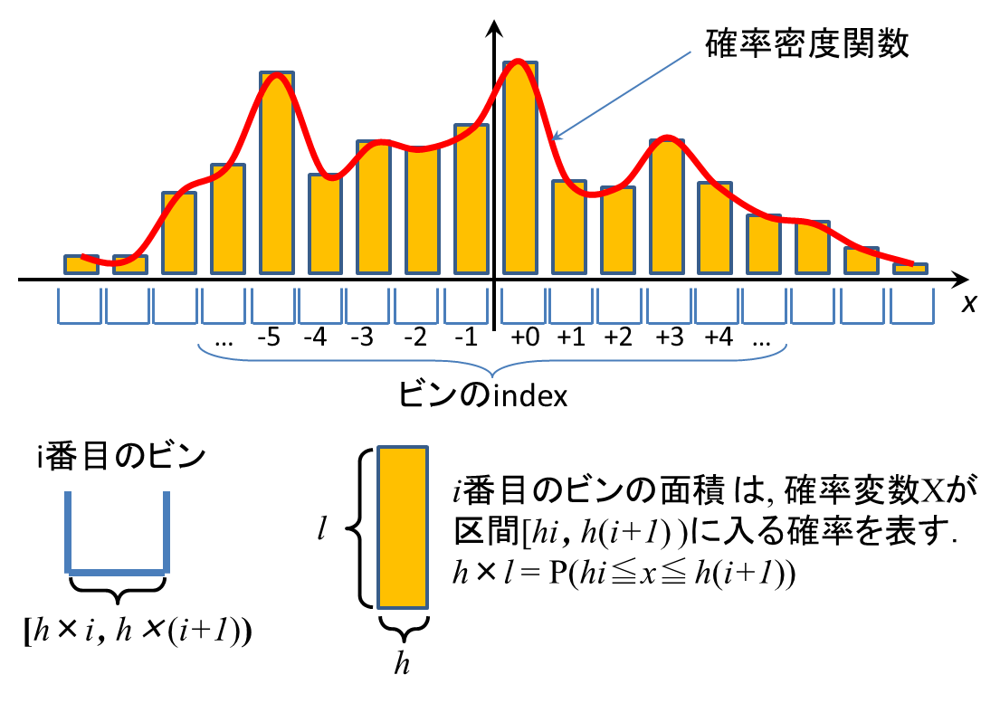
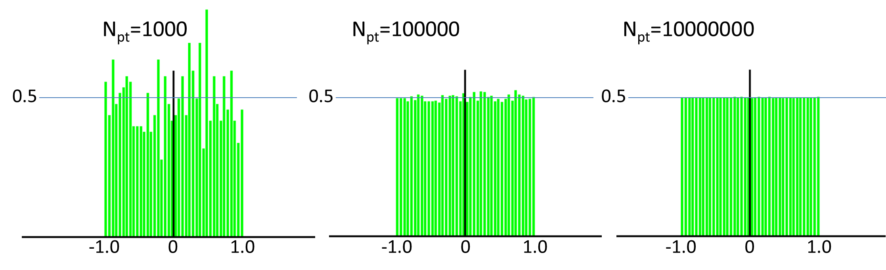
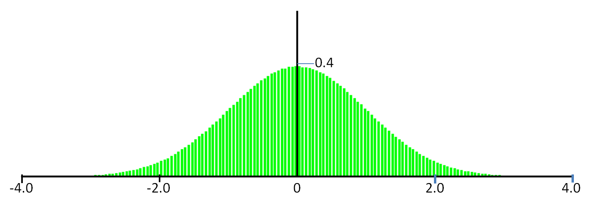
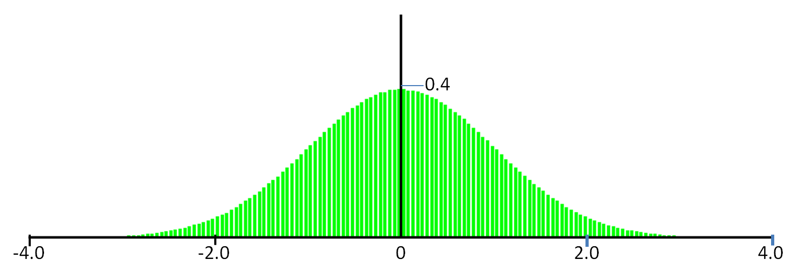
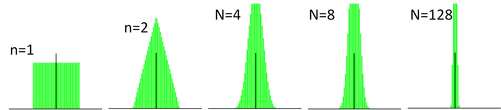
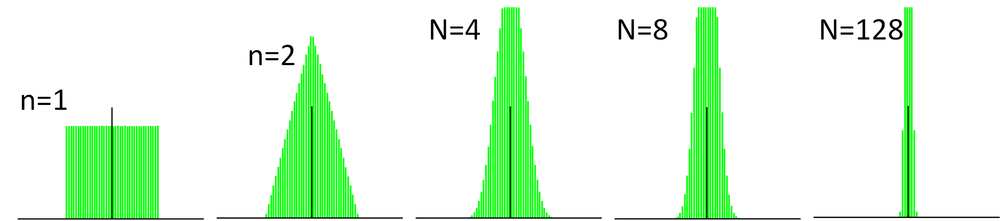
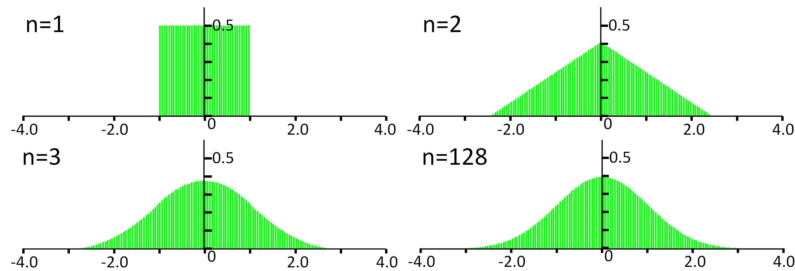
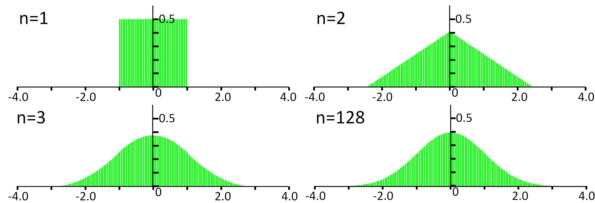

確率論 5
ここまで，[1][2]のおかげて,大体確率論の基礎が理解できてきた.
戻る 確率論6へ
- [1]結城浩, 数学ガール(乱択アルゴリズム)
- [2]平岡和幸, 堀玄 プログラミングのための確率統計
戻る 確率論6へ
C++のrand()が発生する乱数列の確率密度関数
いろんなアルゴリズムを書いていると，ある特定の分布に従う乱数列(1次元だけでなくn次元の乱数も)が必要になることがよくある．
まず準備として，C++のrand()で発生させた乱数列の確率密度関数を描いてみる．
rand()自体はintを返してくるので，次の関数で発生させた乱数を考える。
rand()自体はintを返してくるので，次の関数で発生させた乱数を考える。
//[-1,1]の一様分布 E(X)=μ=0 V(X)=1/3 static inline double myRand() { return 2.0 * rand()/(double)RAND_MAX - 1.0; }
乱数の確率密度関数(の近似)を取得する
1) 幅hのビンを用意し，x軸に敷き詰める;
2) myRand()でNpt個の乱数を発生させて，対応するビンに入れる;
3) i番目のビンに，k個の乱数が入っていたら，このビンの高さ l = k / (h×Npt) とする;
下図の通り，i番目のビンの面積 h×l = P(h×i ≦X≦h×(i+1))であることに注意 (P()は確率);
4) 下図の通り，ビンの上端をつないだものが，確率密度関数になる;

この方法で得られたMyRand()の確率密度関数が以下. Npt を大きくすると，だんだん綺麗な一様分布になる．binのサイズh=0.05とした．

2) myRand()でNpt個の乱数を発生させて，対応するビンに入れる;
3) i番目のビンに，k個の乱数が入っていたら，このビンの高さ l = k / (h×Npt) とする;
下図の通り，i番目のビンの面積 h×l = P(h×i ≦X≦h×(i+1))であることに注意 (P()は確率);
4) 下図の通り，ビンの上端をつないだものが，確率密度関数になる;

この方法で得られたMyRand()の確率密度関数が以下. Npt を大きくすると，だんだん綺麗な一様分布になる．binのサイズh=0.05とした．

Box Muller法
Box Muller法とは，区間(0,1)一様分布に従う乱数を標準正規分布N(0,1)に従う乱数に変換する手法のこと.
一様分布に従う2個の確率変数XYを以下の通り変更すると，標準正規分布に従う2個の確率変数Z1Z2が得られる．
} \cos2\pi Y )
} \sin2\pi Y )

一様分布に従う2個の確率変数XYを以下の通り変更すると，標準正規分布に従う2個の確率変数Z1Z2が得られる．
static inline void BMrand(double &z1, double &z2) { double x1 = rand()/(double)RAND_MAX; double x2 = rand()/(double)RAND_MAX; z1 = sqrt( -2.0 * log( x1 ) ) * cos( 2.0 * M_PI * x2); z2 = sqrt( -2.0 * log( x1 ) ) * cos( 2.0 * M_PI * x2); }BMrandで発生させた乱数列の確率密度関数は以下(発生点数Npt = 1000000とした)．確かにN(0,1)の確率密度関数に一致している．

大数の法則を確かめる
Xiそれぞれを独立同一分布に従う確率変数とし，Znを以下のとおり定義する．

Znを発生させるコートは以下の通り．
先の方法と同様にして,ZnをNpt個発生させの確率密度関数を書いてみる．

確かにnを大きくするのに従い，分散が小さくなっているのがわかる．
これでnを無限大に飛ばせば, 確率変数Znの値は，0に収束する(常に値0を取るようになる)。
Znを発生させるコートは以下の通り．
static inline double rand_1(int n) { double v = 0; for( int i=0; i< n; ++i) v += myRand(); return v / n; }この例では,Xiを，[0,1]の一様分布に従う確率変数とした．
先の方法と同様にして,ZnをNpt個発生させの確率密度関数を書いてみる．

確かにnを大きくするのに従い，分散が小さくなっているのがわかる．
これでnを無限大に飛ばせば, 確率変数Znの値は，0に収束する(常に値0を取るようになる)。
中心極限定理を確かめる
Xiそれぞれを独立同一分布に従う確率変数とし，Znを以下のとおり定義する．

Znを発生させるコートは以下の通り．
確かにnを大きくするのに従い，密度関数の形状が標準正規分布に近づいて行くのがわかる．

ここでは確率変数Xiが一様分布に従うとしたが，元となる分布ななんでもよい．これが中心極限定理の面白いところ．
Znを発生させるコートは以下の通り．
static inline double rand_2(int n) { double v = 0; for( int i=0; i< n; ++i) v += myRand(); return v / sqrt( n * 1.0 / 3.0 ); //myRand()の作る一様分布[-1,1]の分散は1/3なので． }先の方法と同様にして,ZnをNpt個発生させの確率密度関数を書いてみる．
確かにnを大きくするのに従い，密度関数の形状が標準正規分布に近づいて行くのがわかる．

ここでは確率変数Xiが一様分布に従うとしたが，元となる分布ななんでもよい．これが中心極限定理の面白いところ．